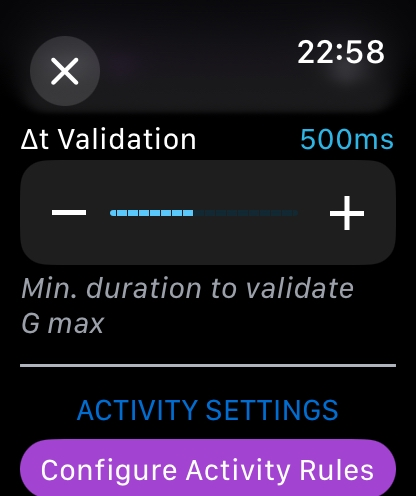

← Back to Home
Aerobatic Flight Logger - User Guide v1.0.1
✅ Version 1.0.1 Update (October 2025): G-Force measurement system has been completely redesigned for significantly improved accuracy. See section 16 for technical details.
1. Home Screen

Left top button : Show Flights History
Right top button : Access Settings
2. Settings: Flight Time Method

Select the Flight Time calculation method:
- TAKE OFF/LANDING: Flight time starts at TAKE OFF, ends at LANDING. An optional TAXI FEE is automatically added.
- HOBBS (ENGINE) time: Flight Time starts on tap ENGINE START, and stops on tap ENGINE STOP. With HOBBS method selected, a H button will appear on ENGINE START screen, at this moment you can enter the HOBBS Departure value. At the end, after ENGINE STOP action, the button HOBB will appear. You can enter the HOBBS arrival value. Those datas are recorded in flight history, there is no control nor calculation on this information.
- BLOCK TIME: In this case, a Block START button will appear after ENGINE START and before ENGINE STOP. Flight time will start when taping this button and stops on BLOCK STOP.
Please note that if you tap on BLOCK START then start a REFUELING sequence, the flight time will be RESET. It will start from zero after END REFUEL tap considering that Taxi to refuel and refueling time is not counted in the flight time when BLOCK/BLOCK method. This is the same after landing. If there is a REFUEL operation, Block time will stop and remain stopped until the end.
3. Settings: Fuel Unit, Taxi Fee

Select the FUEL UNIT. Note: A dual fuel unit for distinct flight is not managed. It is only a global display format for all those datas.
Select TAXI FEE: Taxi fee is the value in minutes that is added to the Flight Time when TAKE OFF/LANDING method is selected.
4. Settings: G-FORCES Alert Rules


During aerobatic flights, the app uses your watch's accelerometer to measure G-forces in real-time. G-forces are displayed live during the aerobatic sequence.
Alert System (Optional - OFF by Default)
G-force alerts are disabled by default to avoid distracting pilots during flight. If you wish to enable them, toggle the switch in Settings and configure the following parameters:
- Rule 1 - Max G: Instant alert when maximum G exceeds a threshold (default: 6.0 G). Triggers a discontinuous pattern with 4 pulses over 2 seconds
- Rule 2 - G Threshold: Alert when G exceeds a threshold (default: 4.0 G) for a sustained duration (default: 5 seconds). Triggers a continuous haptic pattern over 2 seconds
- Rule 2 - Duration: Minimum time (1-30 seconds) that G-forces must exceed the threshold before triggering Rule 2
Delta-T Validation Parameter (New in 1.0.1)
The Δt Validation parameter (100-1000ms, default: 500ms) determines the minimum duration a G-force must be sustained before being recorded as a maximum value. This prevents false peaks from brief arm movements.
- Lower values (100-400ms): More sensitive, captures shorter G-force peaks
- Default (500ms): Balanced setting suitable for most aerobatic flying
- Higher values (600-1000ms): More strict, only records sustained G-forces from real maneuvers
Tip: Start with the default 500ms setting. If you notice the app isn't capturing your peak G-forces, decrease the value. If you see occasional false peaks in the summary, increase the value.
Remember: Accelerometer data is for reference only. Always trust your aircraft's certified instruments for critical flight information.
Starting from version 1.0.1, the G-force measurement system has been completely redesigned with advanced multi-layer filtering and temporal validation for significantly improved accuracy. See section 16 for detailed technical information about how the system works.
5. Settings: Activity Rules


You can configure how each activity type starts:
- Manual: You manually press START and STOP for the activity
- Auto Take-Off: Activity starts automatically at take-off, you press STOP manually
- Auto Take-Off/Landing: Activity starts at take-off and stops automatically at landing
6. Start Flight

Tap on ENGINE START to start your Flight session.
On the left top screen : if you tap on the return icon, you cancel your flight session and return to main menu.
On Flight Screen, the FLT TIME (Flight Time) is displayed, The TimeStamp of the active phase and the time spent on the active phase.
If you are under HOBBS flight time calculation, before ENGINE START tap on the blue H button to enter your HOBBS Departure value.
7. Take-Off / Refuel

On this phase, note that FLT TIME (Flight Time) is remaining to 0 if flight time rule is TAKE OFF/LANDING. Chronometer is not running. You have the current phase TimeStamp.
T-TIME: TAXI TIME (complete Taxi Duration will be available in SUMMARY and History Flight Detail).
After ENGINE START or BLOCK START you have 2 choices for the next phase:
- TAKE OFF: Go for Take Off. If TAKE-OFF/LANDING rule then FLT TIME starts.
- REFUEL
8. Refuel
F-TIME: Elapsed Time during REFUEL.
During this phase, you can enter the added FUEL quantity. Tap on the fuel pump icon .

Enter the value of the fuel quantity added.
9. After Take Off
After Take Off, the FLT-TIME will be always on screen. Take Off Time TimeStamp is displayed.
The O-TIME (OTHER TIME) is displayed.
Note that if you have set the activity to "AUTO TAKE-OFF" in settings it will skip this phase (Other Time).
10. Activity Start/Stop
The activity selected is displayed. For Aerobatic Activity ONLY the real time G-FORCES indicator is displayed. The Apple Watch display is not supposed to be watched during aerobatics maneuvers.
A-TIME displays the activity running time.
Tap ACTIVITY STOP when you're done.
11. Landing

The TimeStamp of Activity Stop is displayed. O-TIME (Other Time) is resuming.
Note that if you have set up AUTO TAKE OFF / LANDING in the activity rule, the ACTIVITY STOP button will be replaced by LANDING (no O-TIME).
12. After Landing
After landing, you have the same 2 choices as before Take off: ENGINE STOP or REFUEL.
If you tap REFUEL it is the same screen as shown above. Refuel value entered will be stored as REFUEL-A (Refuel Arrival).
Note that T-TIME (Taxi Time) will resume from the value before Take Off. Total Taxi Time will be stored.
13. After ENGINE STOP

After ENGINE STOP, you can enter values for G-FORCES (official plane instrument value which are to be considered as THE reference), PoB (People on Board), FUEL LEFT (remaining Fuel).
If HOBBS Rule is selected in SETTINGS, a blue button HOBB will be displayed and available to enter HOBBS value on arrival.
Enter the G+ value and the G- value. To switch from one to the other, tap on the value on the screen.
Be aware that bottom screen keys are only active when fully visible on the screen. So you may have to fully scroll up to use . / 0 or backspace keys.

Enter the PoB value. By default the value is always set to 1. In this case you don't have to tap on PoB button when flight is done, the default value (1) will be stored for the flight.
PoB screen automatically pops up after validating G-Forces entries.
When all entries are completed, tap on SUMMARY to see Flight SUMMARY data.
FUEL LEFT button: Enter the remaining fuel. (same screen than the REFUEL entry screen)
14. Flight SUMMARY
In the first part of the Flight SUMMARY are the major information for the flight.
Note that the END TIME is calculated according to the Flight Time, including the TAXI FEE if Take off/Landing rule. So the END time may be in advance compared to the current time.

Second part of the SUMMARY is dedicated to the Apple Watch accelerometer sensor. The number of Alerts during the session is logged regarding to Rule 1 and Rule 2.

The third part of the SUMMARY is dedicated to all TimeStamps.
Last part of SUMMARY is DURATIONS. The Flight Time in parentheses is without the TAXI FEE.
Don't forget to scroll down and TAP on END FLIGHT to record DATA!
15. Flight HISTORY
From the main screen tap on the History icon to access flight sessions history.
Swipe left to DELETE a session.
The Flight Detail screen is similar to the Summary screen.
16. G-Force Measurement System (Version 1.0.1+)
üÜï New in Version 1.0.1: The G-force measurement algorithm has been completely redesigned with advanced multi-layer filtering and temporal validation to provide significantly more accurate readings during aerobatic maneuvers.
How It Works
Version 1.0.1 introduces a new approach to G-force measurement using advanced 3D vector analysis, multi-layer filtering, and temporal validation. Here's how the system works:
1. 3D Vector Magnitude Calculation
Unlike traditional single-axis measurements, the app now calculates the total acceleration magnitude using all three axes (X, Y, Z) simultaneously. This ensures accurate readings regardless of wrist orientation during complex aerobatic maneuvers such as rolls, loops, or inverted flight.
The system measures the vector norm (magnitude) of the acceleration in 3D space:
Gtotal = √(X² + Y² + Z²)
2. Advanced Multi-Layer Filtering System
Raw accelerometer data contains noise from vibrations, arm movements, and aircraft motion. Version 1.0.1 applies a sophisticated 4-stage filtering pipeline running at 50 Hz (50 samples per second):
- Stage 1 - Physical Limit Capping: Values are clamped to ±10G to reject obviously aberrant readings
- Stage 2 - Median Filter (100ms window): Eliminates transient spikes by taking the median of 5 consecutive samples
- Stage 3 - Trimmed Mean (200ms window): Averages 10 samples after removing the 20% most extreme values (2 highest + 2 lowest) for robust averaging
- Stage 4 - Low-Pass Exponential Filter: Applies exponential smoothing to reduce remaining noise while preserving peak values
Result: This multi-stage approach effectively eliminates false peaks from brief arm movements (typically 0.05-0.2 seconds) while accurately capturing real G-forces from aerobatic maneuvers (typically 0.5+ seconds).
3. Temporal Validation System
The most significant improvement in version 1.0.1 is the temporal validation of maximum values. To prevent recording false peaks from brief arm movements, the system requires G-forces to be sustained for a minimum duration before accepting them as valid maxima.
How it works:
- When a new peak is detected, it becomes a "candidate maximum"
- The system monitors if the G-force remains within 80% of the peak value
- Only if sustained for the configured duration (default: 500ms) is it recorded as a valid maximum
- Brief spikes that drop quickly are automatically rejected
Example:
- ❌ Rejected: +5.3G spike for 0.05 seconds (quick arm movement)
- ✅ Accepted: +2.5G sustained for 0.6 seconds (real aerobatic maneuver)
⚙️ Configurable Parameter: The validation time (delta-t) can be adjusted in Settings → G-Forces Alerts → "Δt Validation" from 100ms to 1000ms (default: 500ms). Pilots can fine-tune this parameter based on their flying style and aircraft characteristics.
4. Automatic Calibration
During your first positive G maneuver (typically the initial pull to approximately +2G in a barrel roll or similar figure), the system automatically calibrates by capturing the reference direction for positive G-forces.
The calibration process:
- Waits for G-forces to exceed 2.0 G
- Captures 5 consecutive samples at this threshold
- Averages these vectors to establish a reliable G+ reference direction
- This reference remains valid for the entire aerobatic session
5. Intelligent G+ / G- Detection
The app uses geometric analysis in 3D space to distinguish between positive and negative G-forces. The system analyzes the angle between the current acceleration vector and the calibrated reference direction:

The detection zones are defined as follows:
- G+ Hemisphere (Green): Vectors with angle < 90° from reference direction are classified as positive G-force
- G- Hemisphere (Red): Vectors with angle > 90° from reference direction are classified as negative G-force
- The boundary at exactly 90° provides clean separation between positive and negative zones
Mathematical principle: The system uses the dot product between the current acceleration vector and the reference vector to calculate the angle: cos(θ) = (V⃗·R⃗) / (|V⃗| × |R⃗|). If cos(θ) > 0 (angle < 90°), it's G+; otherwise it's G-.
6. Alert System
The alert system (optional, OFF by default) is based on absolute G magnitude for maximum reliability. Alerts are 2 seconds long with strong haptic feedback:
- Rule 1 - Discontinuous Pattern: Instant alert when absolute G exceeds threshold (default: 6.0G). Four pulses spaced 0.5s apart with sound + strong haptic feedback
- Rule 2 - Continuous Pattern: Alert when G exceeds threshold for sustained duration (default: 4.0G for 5 seconds). One sound followed by continuous haptic feedback over 2 seconds
⚙️ Safety Feature: Alerts are disabled by default to avoid distracting pilots during flight. Enable in Settings only if you are confident they will not interfere with your flying.
Why This Approach is Better
The previous version (1.0) used only the Z-axis perpendicular to the watch screen and accepted instantaneous peak values. This caused two major issues:
- Orientation dependency: Readings varied wildly with wrist position
- False peaks: Brief arm movements registered as high G-forces (5-12G from simple gestures)
Version 1.0.1 solves both problems:
- ✅ 3D approach is orientation-independent and provides consistent accuracy regardless of wrist position
- ✅ Temporal validation eliminates false peaks by requiring sustained G-forces, not instantaneous spikes
- ✅ Multi-layer filtering removes noise while preserving real aerobatic data
Measurement Pipeline Summary
Raw Data (50Hz)
↓
1. 3D Vector Magnitude ✓
↓
2. Physical Limit Capping (±10G) ✓
↓
3. Median Filter (100ms) ✓
↓
4. Trimmed Mean (200ms) ✓
↓
5. Low-Pass Filter ✓
↓
6. Auto Calibration ✓
↓
7. G+/G- Detection (90° cones) ✓
↓
8. Temporal Validation (500ms default) ✓
↓
Final Display Value (0.1G precision)
⚠️ Important Safety Notice: While version 1.0.1 significantly improves accuracy, Apple Watch accelerometer data remains FOR REFERENCE ONLY. Always rely on your aircraft's certified instruments as the primary source of flight data. The watch should never be used for critical flight decisions.
Best Practices
- Ensure the watch is snugly fitted to your wrist to minimize movement
- Start the aerobatic activity before your first pull maneuver to allow proper calibration
- Adjust the Δt Validation parameter (Settings → G-Forces Alerts) based on your flying style:
- 300-400ms: For dynamic, quick figures with brief G-forces
- 500ms (default): Balanced setting for most aerobatic flying
- 600-800ms: For sustained figures and smoother flying styles
- Verify calibration by comparing the displayed values with your aircraft instruments during the first maneuver
- Remember that the watch display should not be watched during aerobatic maneuvers - check values after completing figures
- After landing, review the Summary screen to see your maximum G+ and G- values for the flight
Troubleshooting
- Values seem too low: Try reducing Δt Validation to 300-400ms in Settings
- Still seeing occasional false peaks: Increase Δt Validation to 600-800ms in Settings
- No calibration happening: Ensure you perform a clear +2G pull maneuver early in your sequence
- Inconsistent readings: Check that the watch is snugly fitted and doesn't move on your wrist
17. Bonus
Since Aerobatic Flight Logger uses HealthKit Workout Sessions to keep the app active during your flight, you will be able to see history of flight sessions in the Workout Sessions of the Health application on your iPhone.
Please note: No health data is collected in Aerobatic Flight Logger. If you don't want to see workout sessions in the Health app on iPhone, you can, at any time, deactivate the app authorization in your Health App Settings.
Enjoy and have a good Flight (watching mainly outside)! ✈️
Back to Home | Support & FAQ | Privacy Policy